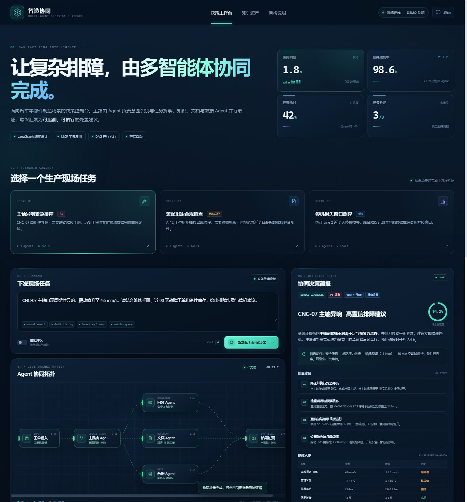
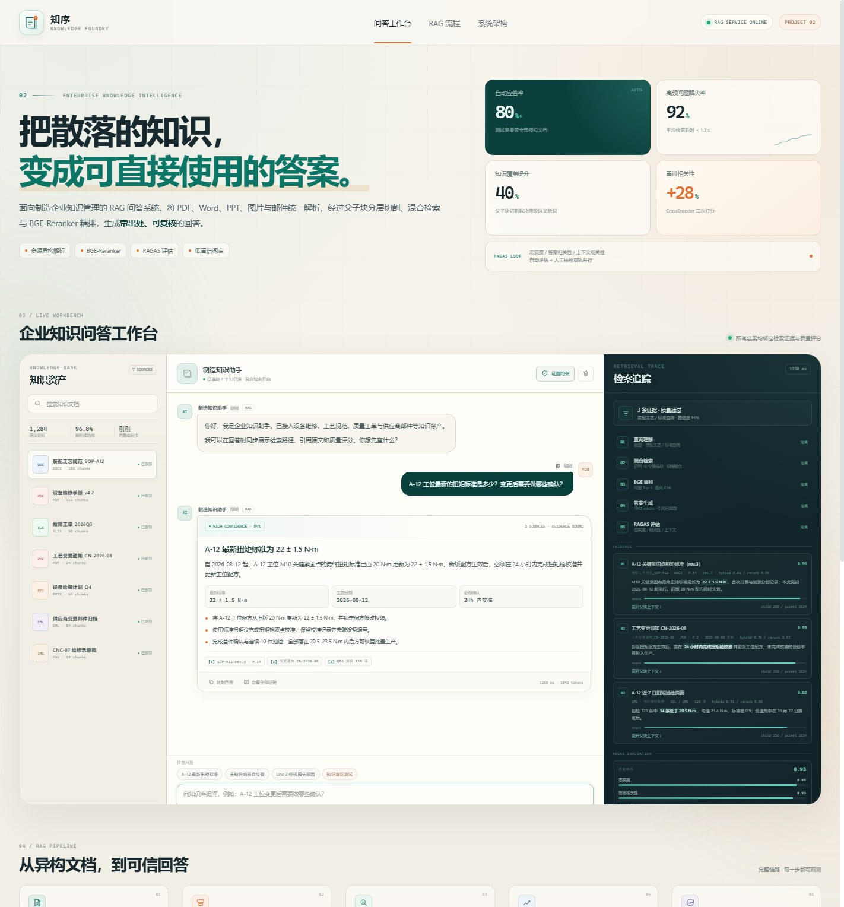
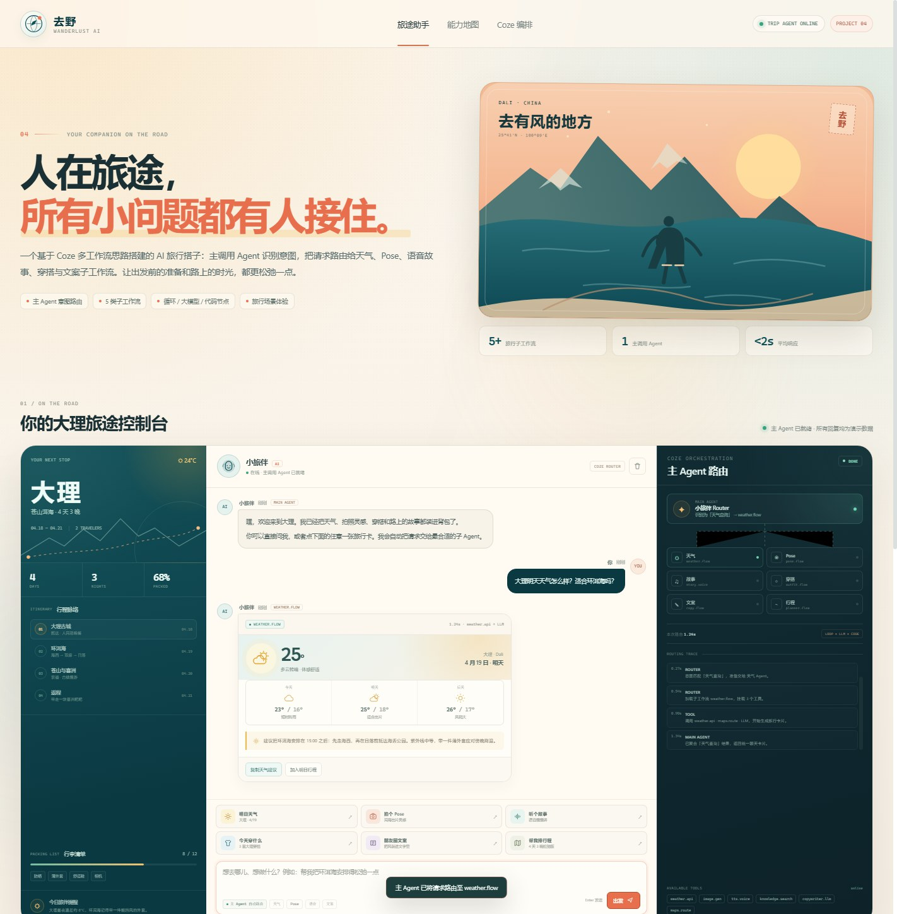

OPEN DEMO 01CASE 01MULTI-AGENT ORCHESTRATION
多智能体协同决策平台
以汽车零部件制造为场景，主路由 Agent 拆解现场任务，知识、文档与数据 Agent 并行执行，最终汇聚为可追溯的排障决策简报。
3并行子 Agent
3典型业务场景
42%方案推理降本
01 从业务理解，到可运行的作品
这里是我围绕多 Agent 编排、RAG 知识问答与 Coze 工作流完成的三个交互式项目。每一个都能直接打开体验，而不只是停留在方案截图里。
浏览项目 ↓每个项目都包含完整的交互流程、可解释的状态展示与明确的实现边界。

OPEN DEMO 01以汽车零部件制造为场景，主路由 Agent 拆解现场任务，知识、文档与数据 Agent 并行执行，最终汇聚为可追溯的排障决策简报。

OPEN DEMO 02面向制造企业知识孤岛，把多源文档统一接入，通过父子块切割、混合检索、BGE-Reranker 精排与 RAGAS 评估，输出带出处的可信回答。

OPEN DEMO 03一个基于 Coze 多工作流思路搭建的旅行搭子：主调用 Agent 根据意图，把需求路由给天气、Pose、语音故事、穿搭、文案与行程规划工作流。
计算机科学与技术本科，做过数字绘画教学与企业沟通工作。现在聚焦 AI 应用开发，习惯用 AI 编程工具快速验证方案，把抽象的 Agent、RAG 与工作流概念变成可操作、可解释的前端体验。
LangGraph / LangChain 思路、状态管理、主子 Agent 路由与 DAG 拆分。
文档解析、父子块切割、混合检索、Rerank、引用与质量评估。
Cursor / ChatGPT / Trae 辅助开发，Prompt Engineering 与原型验证。
HTML / CSS / JavaScript，交互叙事、数据可视化与响应式设计。
Python、SQL、FastAPI、Redis、MCP 接口设计与可观测性。
从教学与企业沟通经历中沉淀的需求理解、表达与协作能力。
三个页面都支持点击、输入、状态流转与结果输出，适合面试现场直接操作。
Agent 编排、检索、路由和容错流程由浏览器内状态机模拟；生产版本可接入真实 LangGraph / RAG / Coze 服务。
页面中的企业、设备、天气、行程与指标均为作品演示数据，不对应真实客户信息。